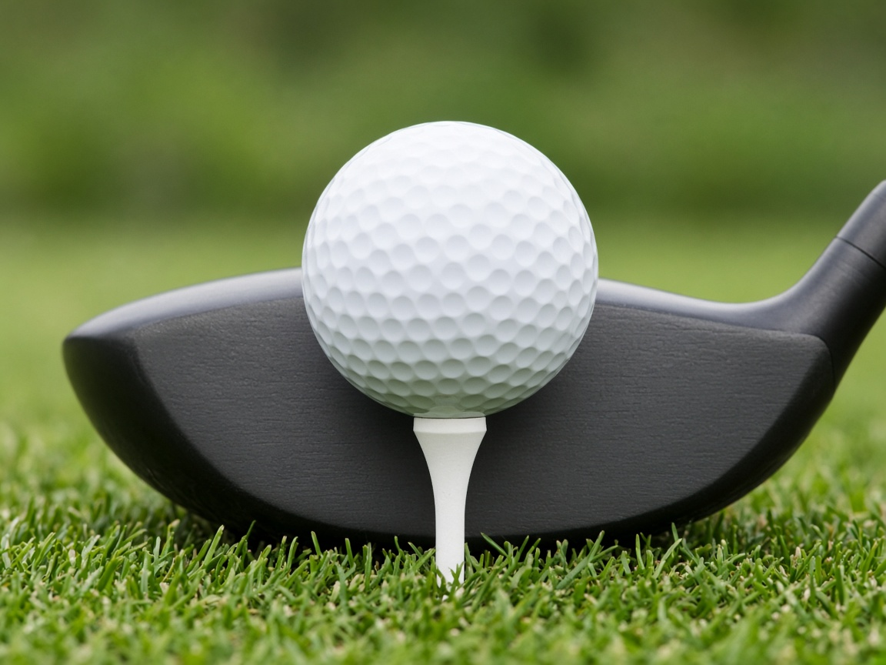
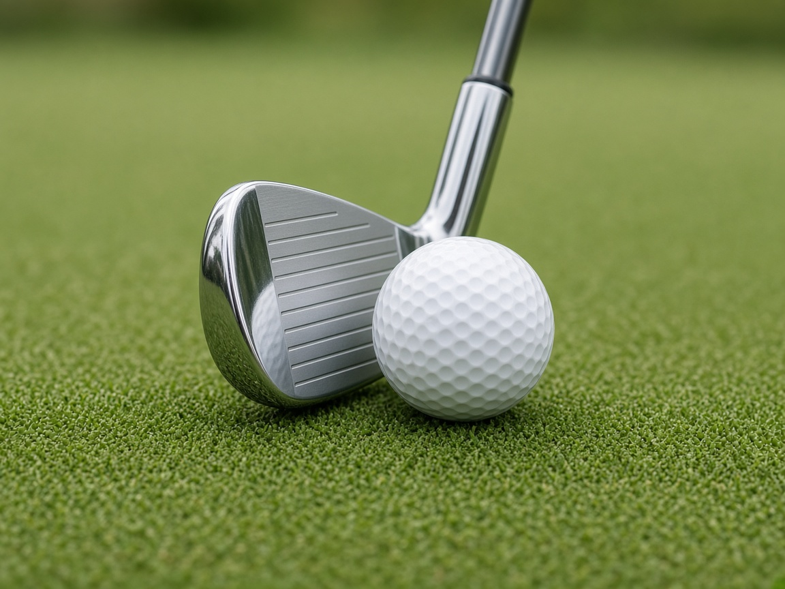
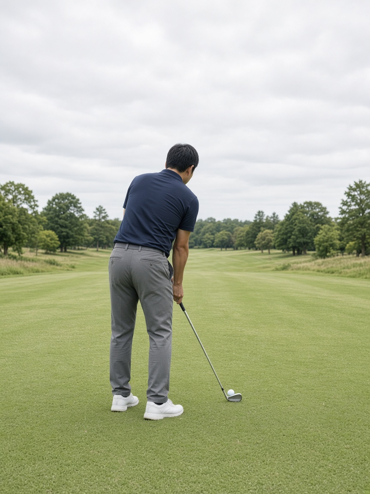
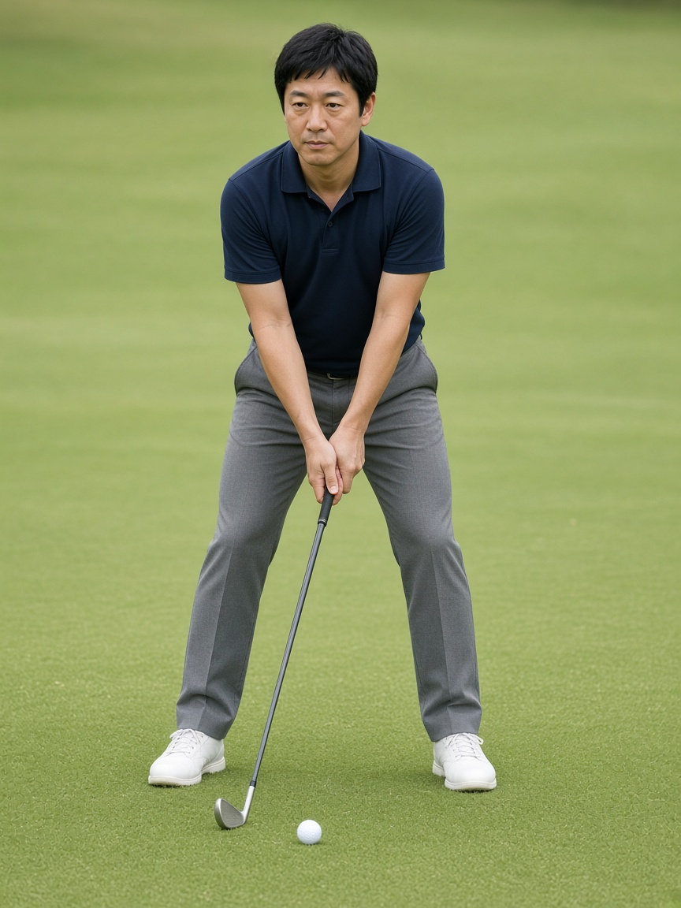
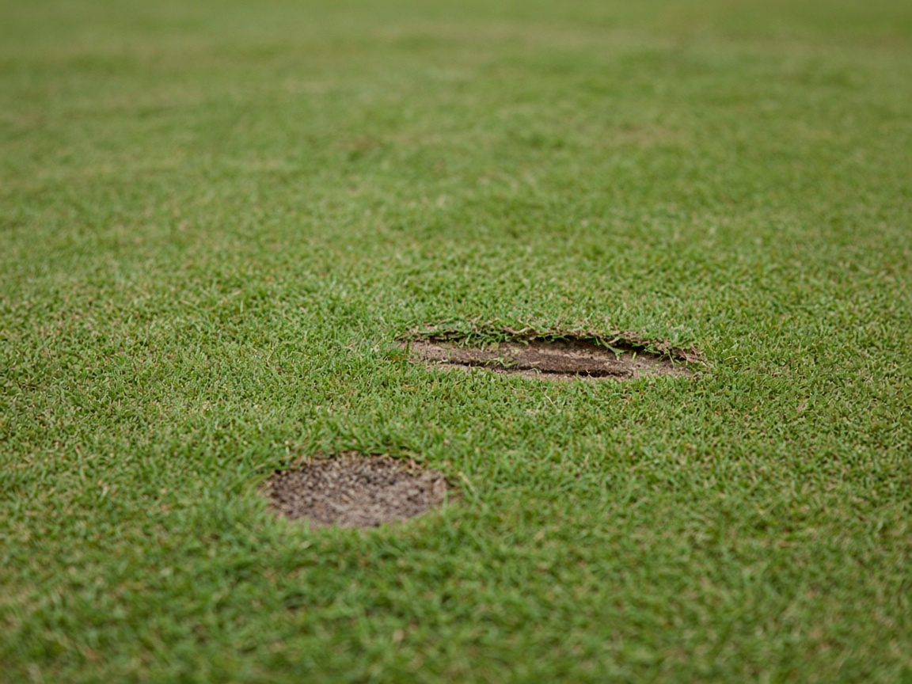

LESSON 1
真っ直ぐ飛ぶかは、振る前に決まっている
努力する場所を間違えないための優先順位
「真っ直ぐ飛ばす」と聞くとスイングの話に思えますが、実際に方向を決めているのは打つ前の3つの位置です。順番はこうなります。
| 順 | 決めること | 効き方 |
|---|
| 1 | クラブフェースの向き
目標線に対して直角に置く | ボールが最初に出る方向を決める。最重要 |
| 2 | ヘッドとボールの合わせ方
フェースのどこにボールを合わせるか | 芯を外すと、当たりも方向も弱くなる |
| 3 | 身体の向きとボール位置
足・腰・肩を目標線と平行に | 向きがズレていれば、良い球でも狙いから外れる |
| 4 | 7割で振り切る | ここで初めてスイングの話になる |
1球ごとに、この順で
フェースを合わせる → ヘッドとボールを合わせる → 体を平行に置く → 7割で振り切る
構えの向き：同じ点を向かない
ボールと目標を結んだ線に、体を平行に置きます。目標に体を向けようとすると、体は目標より右を向いてしまいます。
ILLUST構えの向き。足を先に置くのではなく、フェースを目標線に合わせてから体を平行に置く。
LESSON 2
クラブヘッドとボールの位置関係
ドライバーとアイアンは、合わせる場所が違う
用語の整理：ボールを打つ部分がクラブヘッド（「ヘッダ」ではなくヘッドです）。その打面がフェース、フェースの中心が芯（スイートスポット）。ヘッドの先側がトウ、根元側がヒール、地面に接する下端がリーディングエッジ。以下この呼び方で進めます。
ドライバー：ボールはフェースの「上半分」
ドライバーは上がり際で当てるクラブなので、フェースの中心よりやや上で当てるのが正解です。そのためにティーを高くします。

PHOTOこれが正しいティーの高さ。ヘッドを地面に置いたとき、ボールの真ん中（赤道）がヘッドの上端と同じ高さ。ボールの上半分がヘッドより上に出る。
ILLUSTティー高さ3段の比較。「当たらない」原因が高さにあることは多い。迷ったら赤道＝ヘッド上端に戻す。
アイアン：ボールはフェースの「下半分」、隙間はゼロ
アイアンは地面のボールを下がり際で当てます。ヘッドを地面にぴったり置き、フェースの下半分にボールが接する状態が基準です。

PHOTOアイアンの基準。リーディングエッジ（下端）が地面に接地。ボールはフェースの下半分に、隙間ほぼゼロで合わせる。この位置で構えると、振ったときに芯へ戻りやすい。
フェースのどこに当たったかで、球は変わる
芯を外すと、方向も飛距離も落ちます。左右にブレる原因が「振り方」ではなく「当たる場所」の場合があります。
ILLUST当たる場所と結果。右へ出るならトウ寄り（＝遠すぎる）、左へ出るならヒール寄り（＝近すぎる）を疑う。打つ前に直せる部分。
CHECK POINT
- ドライバー：ボールの赤道がヘッド上端。フェースの上半分に合わせる
- アイアン：リーディングエッジを地面に。フェースの下半分に隙間なく合わせる
- どちらも、構えた時点でフェースとボールの間に大きな隙間を作らない
LESSON 3
身体とボールの位置関係
覚えるのは「前後」「距離」「前傾」の3つだけ
① 前後の位置：クラブで置き場所を変える
ILLUSTクラブ別のボール位置。ドライバーだけ左足寄り。この1点で当たりが変わる。
② 距離と前傾：写真で形を覚える

PHOTO後ろから見た形。股関節から前傾し、背中は丸めない。腕は真下に垂れ、シャフトがボールへ自然に届く距離。

PHOTO正面から見た形。7番アイアンはボールがスタンス中央。体重は左右5:5。頭は動かさない。
ILLUSTボールとの距離の決め方。腕を真下に垂らした位置がグリップの場所。距離が狂うと、当たる場所（トウ・ヒール）も狂う。
CHECK POINT
- ボールとの距離は「腕を垂らして、手と体の間に手のひら1枚」
- 前傾は膝ではなく股関節から。背中は板のように
- 体重はアイアン5:5。ドライバーだけ右足に6:4で右肩が少し下がる
LESSON 4
スイングの注意点
アイアンとドライバーは、当てる場所が正反対
ILLUST最下点の違い。「ドライバーが当たらない」原因の多くは、技術ではなくボール位置とティー高さがアイアンのままになっていること。

PHOTOアイアンの正解の跡。手前（ボールがあった位置）ではなく、その先に芝の跡が残る。手前に跡があればダフリ、跡が出なければトップ。
やってはいけないこと
| NG | 起きること | 代わりに |
|---|
| ボールを上げようとする | 体が右に残り、すくい打ちでダフリ・ゴロ | 上げるのはクラブの仕事。前に飛ばすだけ |
| 頭の高さが変わる | 上がればトップ／ゴロ、沈めばダフリ | 打ち終わるまで同じ高さ |
| 強く握る | 腕が硬くなりフェースが戻らず右へ | 軽く包む（7月の指の痛みもここが原因の可能性） |
| テークバックが速い | 切り返しで力み、上体が突っ込む | 上げはゆっくり、下ろしは自然に |
| インパクトで手を止める | 手だけで操作して左右にブレる | 胸が目標を向くまで回し切る |
| 10割で振る | 体が起き上がって芯を外す | 7割。飛距離は振り切った結果 |
PHOTO目指すフィニッシュ。左足1本で立ち、胸が目標を向き、右かかとが上がった形。ここまで来ていれば、途中で緩んでいない。
迷ったとき戻る場所
ゆっくり上げて、7割で、振り切る
LESSON 5
球が曲がる仕組み
「曲がった」のか「真っ直ぐズレた」のかで、対策は別
曲がりは①フェースの向きと②振る軌道の組み合わせで決まります。まず自分の球がどれかを知ることが対策の入口です。
ILLUST5つの球筋。「曲がる」（スライス・フック）と「真っ直ぐズレる」（プッシュ・引っかけ）は原因が別。
| 球筋 | フェースの向き | 振る軌道 |
|---|
| ストレート | 目標を向いている | 目標線に沿っている |
| スライス（右に曲がる） | 開いている（右向き） | 外から内へ |
| フック（左に曲がる） | 閉じている（左向き） | 内から外へ |
| プッシュ（真っ直ぐ右） | スクエア | 右方向へ振っている・体の向きが右 |
| 引っかけ（真っ直ぐ左） | 閉じている | 外から内へ |
7月の練習メモの「左へのスライス」について
右打ちのスライスは右へ曲がる球です。左に飛んでいたなら、それは引っかけかフックで、原因も対策も逆になります。
当時の対策「狙いを少し右に取る」は左へ出る球には効きません（出球の位置がずれるだけで、曲がりは残る）。明日は左に出たか右に出たかだけメモしてください。それで処方が決まります。
LESSON 6
ミス処方箋
まず「打つ前の位置」を直す。スイングを変えるのは後
ミスが出たら、いきなり振り方を変えないでください。ダフリも左右のブレも、クラブ・ボール・自分の位置を直すだけで軽くなることが多いためです。各ケースを「打つ前の補正」→「振るときの意識」の順で並べています。
ケース1
ダフる（ボールの手前を叩く）
手に「ドン」と重い衝撃。マットでは手前を叩いても滑って飛ぶので気づきにくい。
原因（多い順）
- ボールを上げようとしてすくっている（最下点がボールより手前に来る）
- 体重が右足に残る。振り終わりで体が右に残った形
- 切り返しで上体が突っ込む・右肩が下がって体が沈む
- ボール位置が右足寄りすぎ、または左すぎ
- 力み（10割）で体が上下に動く
打つ前の補正（クラブ・ボール・自分の位置）
- ボール位置をスタンス中央に戻す。ダフリが続くときは半個分だけ右へ
- ヘッドを地面にぴったり置き直す。浮いた状態で構えると、その分だけ手前を叩く
- ボールとの距離を確認。遠すぎると届かせようとして上体が突っ込む
- グリップを1cm短く持つ（ヘッドが暴れにくくなる）
- 構えた時点で手がボールより少し前（目標側）にあるか。手が体の後ろにあるとすくい打ちになる
振るときの意識（1つだけ）
「ボールの先の地面を擦る」。ボールを打つ意識をやめる。振り終わりは左足に体重を乗せて立つ。
ケース2
ゴロになる・トップする（球が上がらない）
「カツ」と軽い音で低く転がる。ダフリと逆の現象に見えて、原因は同じ「上げようとする」ことが多い。
原因（多い順）
- インパクトで伸び上がる（頭が上がる）→ 球の上側を叩く。最大の原因
- 当てにいって手前で減速し、クラブが下がりきらない
- 上げたい意識で体が右に残り、手だけ先に行く
- ボール位置が左すぎる（アイアンなのにドライバーの位置）
- フェースの下部に当たっている（ティーが低い／ボールが遠い）
打つ前の補正（クラブ・ボール・自分の位置）
- ボール位置を左から中央へ戻す（アイアンは必ず中央）
- ボールとの距離を近づける。遠いと届かせようとして体が伸び上がる
- フェースの下半分にボールが合っているか確認。上半分に合わせて構えていると上側を叩きやすい
- 前傾を作り直す。棒立ちだとクラブが下まで届かない
- ドライバーならティーを少し高く（赤道＝ヘッド上端に戻す）
振るときの意識（1つだけ）
「頭の高さを打ち終わるまで変えない」。これだけで多くが直る。当たり始めるまでハーフスイングで。
ケース3
右へ流れる（スライス／プッシュ）
右へ曲がっていく＝スライス。真っ直ぐ右へ出る＝プッシュ。
原因
- スライス：フェースが開いて当たる（腕に力が入って戻らない）／クラブが外から内へ下りる／体だけ先に開く
- プッシュ：体の向きがそもそも右／ボール位置が右すぎ
- どちらもトウ寄り（先側）に当たっていることがある＝ボールが遠い
打つ前の補正（クラブ・ボール・自分の位置）
- フェースの向きを置き直す。リーディングエッジが目標線と直角か、上から覗いて確認
- 足元にクラブを1本置き、足の線が目標線と平行か確認（肩が目標を向いていないか）
- ボールとの距離を近づける。トウ当たりが右へのブレを増やす
- グリップを緩める。左手の甲が少し上を向く程度に握り直す
- ボール位置が右すぎないか（アイアンは中央）
振るときの意識（1つだけ）
「フィニッシュまで胸を回し切る」。回転が止まるとフェースが開いたまま当たる。
ケース4
左へ流れる（引っかけ／フック）
7月に出ていた可能性が高いのはこちら。真っ直ぐ左へ出る＝引っかけ、左へ曲がる＝フック。
原因（多い順）
- 手で当てにいってフェースを返しすぎている
- 体の回転がインパクトで止まり、腕だけ先に返る
- クラブが外から内へ下りている（＋フェースが閉じている＝引っかけ）
- 上体から先に打ちに行く（切り返しで肩が突っ込む）
- ヒール寄り（根元側）に当たっている＝ボールが近すぎる／グリップが被っている
打つ前の補正（クラブ・ボール・自分の位置）
- フェースの向きを置き直す。左を向いて（閉じて）置いていないか
- ボールとの距離を少し離す。ヒール当たりが左へのブレを生む
- グリップを握り直す。左手が被りすぎ（甲が上を向きすぎ）だとフェースが閉じる
- ボール位置が右すぎないか確認（右すぎると左へ出やすい）
- 狙いを右に取る補正はしない。出球がずれるだけで曲がりは直らず、当たりも乱れる
振るときの意識（1つだけ）
「腕で振らず、体の回転で運ぶ」。回転を止めないこと。テンポを一定に、7割で。
直す順番：①打つ前の位置 → ②当たり（ダフリ・ゴロ）→ ③方向（左右）。当たっていないうちに方向を直そうとすると、両方悪くなります。明日は①と②だけで十分です。
LESSON 7
打ちっぱなしでの確認方法
マットは芝と違い、ミスが隠れる
| 見るもの | 判定 |
|---|
| 手に来る衝撃 | 「ドン」と重い＝ダフリ／「カツ」と軽い＝トップ |
| マットの擦り跡 | ボールより手前に跡＝ダフリ／跡が出ない＝トップ気味 |
| 球の高さ | 低く転がる＝トップ・ゴロ／フワッと上がって飛ばない＝すくい打ち |
| 出球の方向 | 左か右か。曲がったか、真っ直ぐズレたか |
| 当たった場所 | 右へ弱い球＝トウ寄り／左へ弱い球＝ヒール寄り |
1つだけやるドリル
目印を擦るドリル
ボールの少し先（目標側）に目印を置く（ティー1本など）。「ボールを打つ」ではなく「目印を擦る」意識で振ります。ダフリ・すくい打ち・トップがまとめて軽くなる、今の課題に最も効くドリルです。
明日メモすること
- ドライバー：使える球の数（／12）と、左に出たか右に出たか
- 7番アイアン：前に飛んだ数（／20）と、ダフリが多いかトップが多いか
- 左手の痛みの有無、疲れが出たタイミング
← 明日の練習メニュー（打ちっぱなしガイド）へ